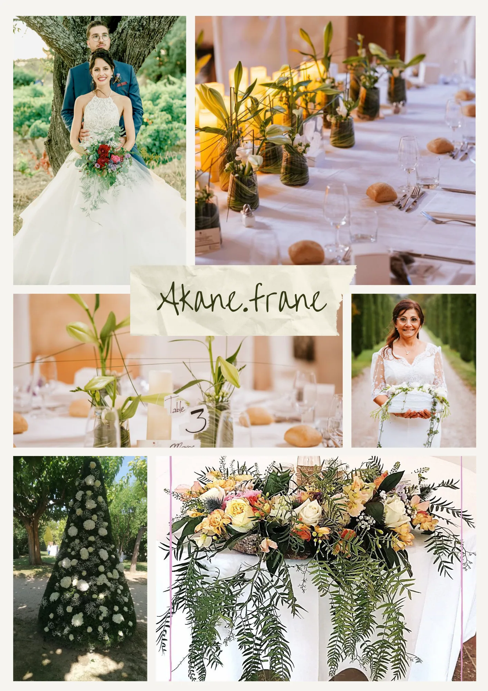

Notre partenaire

Fleuriste
Le Murmure des fleurs
Je suis Frane, fleuriste-décoratrice diplômée d’État et fondatrice d’Akane — Le Murmure des Fleurs, un atelier situé à Cuers. J’ai eu le privilège de collaborer avec des professionnels de renom, ce qui m’a permis d’explorer des univers floraux très riches et de sublimer aussi bien de petites célébrations que des événements d’envergure. Mon objectif est d’offrir un service attentionné et élégant.
Email akane.frane@gmail.com
Departements 83, 63

Pour aller plus loin